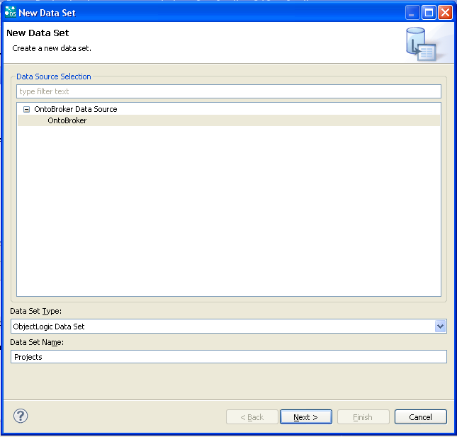

|

|
|
Creating a Report Displaying Author Deta |
|
|
|
|
Creating a Report Displaying Author Deta |
| 1. | From the top level menu select: Window -> Open Perspective -> Other....-> Report Design and click on OK. |
| 2. | Create a Report. |
| a. | Make a right mouse click on a project and select New -> Report. |

The following form appears:
| b. | Select a project, give a name to the report and click on Next. |
| c. | Click on Finish. |
The report is created:
| 3. | Create a new ObjectLogic Data Source. |
| a. | Make a right mouse click on Data Sources and select New Data Source. |
A dialog appears.
| b. | Select OntoBroker Data Source and give a name to the Data Source and click on Next. |
| c. | Fill out the fields and click on Finish. |
The data source has been created.
| 4. | Create a new data set. |
| a. | Right mouse click on Data Sets and select New Data Set. |
A dialog appears.
| b. | Fill out the fields and click on Next. |

| c. | Select the project, the module and the query queryProjects and click on Finish. |
A new dialog appears:
| d. | In the left hand menu, click on Computed Columns and then click on New.... |
A new dialog appears:
| e. | Enter a name and a data type, and click on the symbol fx. |
A new dialog appears:
| f. | Write a formula containing the forename and last name. Click on OK. |
The formula has been added to the Expression field.
The "replace" function has been used to delete the quotes which are displayed as a default and hence give a better display.
| g. | Click on OK. |
The new column has been created.
| h. | Click on OK. |
The data set has been created.
| 5. | Make a right mouse click on Report Parameters and select New Parameter: |
A dialog appears.
| 6. | Fill out the different fields in the following way and click on OK: |
The report parameter is created.
| 7. | Select the ProjectsList parameter and drag&drop it in the report. |
A data-field is displayed in the report.
| 8. | Create a new data set. |
| a. | Make a right mouse click on Data Sets and select New Data Set. |

| b. | Fill out the fields and click on Next. |
| c. | Select the project, the module and the query queryProjectsDetails. Click on Finish. |
A new dialog box appears:
| d. | In the left hand menu, click on Parameters. |
| e. | Double-click on the first line (corresponding to the projects name). |
A new dialog box appears:
| f. | In the Direction field select Input from the drop-down list. In the Linked to report parameter field, select ProjectsList from the drop-down list. |
An input parameter is defined in order to restrict the query.
| g. | Click on OK. |
The second data set is created.

| 9. | Drag&Drop this second data set from the Data Explorer tab to the report. |
A table is displayed in the report:
| 10. | Click on the Preview tab and on the Show Report Parameters button. |
A dialog box appears:
| 11. | Select an author from the list and click on OK. |
The report shows details of this author: